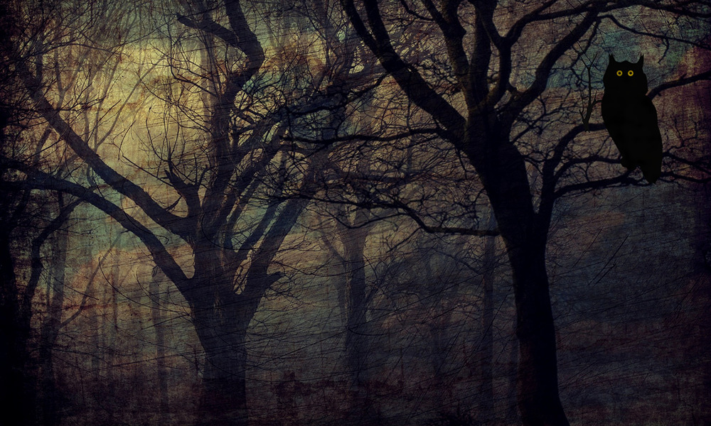

|

SnyrlLes SklaroffIn the beginning was the Bird… Or so it is said, but with due respect to the literalists of Snoak City, the Bird must have post-dated the Beginning, in all likelihood by a century or two, in order for the tree to grow from a fortuitously germinated acorn into the immense grandeur of its oakhood. The Bird was called Snyrl, a name spoken with lip curled in disdain or mockery only by those unfamiliar with the mythic history. Snyrl, whose wondrously glittering wings (as depicted in ancient images) sheltered its unseen brood amid the topmost hidden reaches of the oak, as the tree itself provided protection from storm and sun alike to those who were constrained to conduct their lives on the ground. Snyrl, to whom befitting offerings of cakes and woven purses and hand-crafted trinkets were deposited across the river in the Deep Hollow at midnight under a full moon. These gifts were ceremonially guarded by successive generations of trusted Watchers. Only to the Watchers were granted (through shielded, sleep-deprived eyes) glimpses of those fabled feathers, or of the great golden beak. A hushed swoop, and the gifts were gone before any human eye had time to blink. So it was said. When the Watchers left at dawn, they were always able to confirm that in the Deep Hollow there remained not so much as a telltale crumb, wisp or shard. In response, Snyrl might reward the genuinely virtuous with whatever they most desired: improved health, fecundity, safe childbirth, pest-free crops, profitable trade, whatever else might alleviate the difficulties of a hard life. Alternatively, any subsequent misfortune would be attributed either to insufficient virtue or (no matter how many hours of dedicated labour may have been invested) to gifts deemed by Snyrl to be in some way unsatisfactory. It was not known what became of rejected offerings. They were not returned. The Watchers believed that they probably winked out of existence. Or so it was said. While Snyrl remained loftily aloof, an inaccessible mystery to all but the devoted and privileged few, Snyrl’s Oak on the other hand was a constant and reassuring presence, and an invaluable source of essential materials. The annual shedding of mast provided food for the pigs, the farming of which was the primary occupation in the area, while careful management of the lower branches yielded excellent timber for flooring and furniture, staves, stakes, spokes, ladders, handles, and other items. Its leaves were toxic to all but the pigs, but the tannins extracted from the bark and galls were useful for leather-curing, dyes, even for some herbal remedies. Over the years the Deep Hollow flooded and was repeatedly drained, its bowl eventually housing the superstructure of Praspafole Stadium. The tree remained central to the community, known always as Snyrl’s Oak, even though the mystique which had shrouded the elusive bird had long since drifted into legend, and the generations of Watchers were no more than dissipated ghosts. Snyrl’s Oak, a venerable relic of its former glory, finally succumbed to the ravages of an unprecedentedly fierce storm, during which it was twice riven by lightning strikes and partially uprooted by gale force winds. Before it fell it would have taken as many as eight adults with fully outstretched arms to encircle the bole. It took ten times that number, equipped with axes and hand-saws, to dismember the unscorched sections of the fallen giant and transport the timber to a dry storage area. In time, portions of that wood were destined to furnish half the households in this increasingly urbanised community. Pig-farming gradually gave way to many other industries and pursuits. According to most etymologists, the name “Snyrl’s Oak” underwent an inevitable vernacular contraction, to become at last simply “Snoak”. Years later, on the site where the once revered tree had stood for so long, the octagonal hub of Central took shape, with its complex of municipal offices, laboratories, and historical archives. Around it at various dates grew numerous enterprises familiar to any visitor today: the Fappit workshops, Quicksilver, the 3rdfield music studios, Sparagulan College, and the Auditorium. Just across the Stirrow were built the city museum and library, and the Stadium, with its adjoining glider track and gymnasium. A less convincing explanation for the city’s name is that “Snoak” was once that of an actual person, possibly a particularly successful pig-farmer. Scholars have largely dismissed this idea as being absurdly fanciful. © Les Sklaroff 2020 All Rights Reserved |
||
|
Date of last update 1 Apr 2020 Portions of this site are copyrighted to third parties |
||